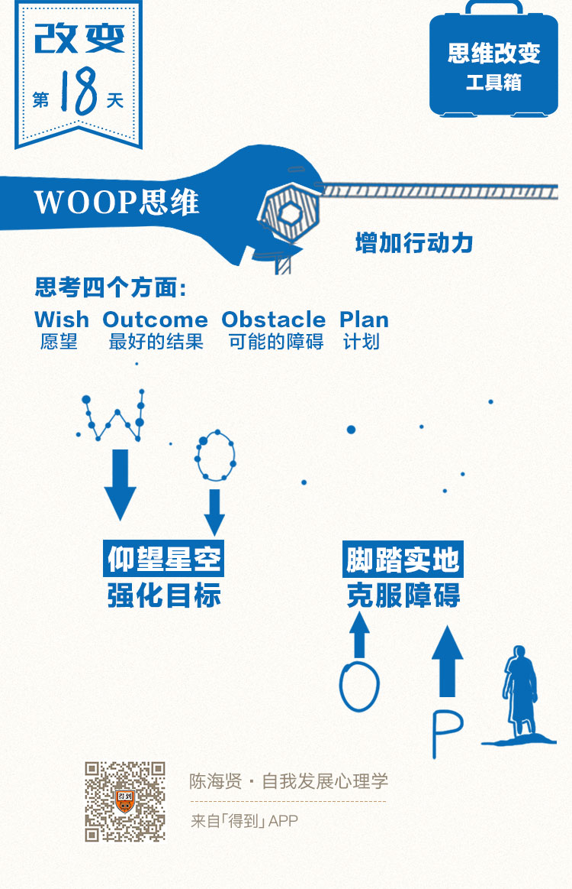

18丨WOOP思维：张力如何变成行动力？

欢迎来到《自我发展心理学》。
你好，我是陈海贤。
还记得上节课我们把思维的发展比作河流吗？一条河要流动，需要三个条件。
第一个条件是河流落差产生的张力，也就是我们上节课讲的创造性的目标。可是只有这个还不够，张力并不是那么让人舒服的，因为它会让我们一直处于一种紧张的状态。
这一讲和下一讲，我们就来看看河流流动的第二个条件——河道。我们来思考如何把张力变成自己的行动力。
今天，我来介绍一种特别的，增加行动力的思维方式——WOOP思维。
不知道你有没有这样的经验：当你为自己的碌碌无为内疚的时候，你自然就会下决心或者做计划。下了决心以后，你的自我感觉好了一些，感觉一好，张力自然就释放了。于是，行动的动力反而减少了。
- 有些时候，我们会买很多书，却从来不读；
- 买了健身卡，却从来不去；
- 买了很多课，却不好好听。
以前你会以为是自己的意志力不够，没法坚持。现在你知道了，买书、办卡、买课，本身就有目的，就是为了减轻目标带来的张力来缓解我们自己的焦虑。
大脑分不清什么是计划和决心，什么是真正的行动。有时候就因为我们下了决心，做了计划，大脑就会误以为我们已经做过了，行动的张力就被消减了。
有一种说法是，人需要积极乐观的幻想，来为我们的行动提供希望。所以当一件事遇到困难时，我们总是会幻想克服掉困难和达成结果之后的场景。
可是从张力的角度，积极乐观的幻想可能也没那么好了。因为它可能会减少你行动的动力。
比如，有一个研究就发现，幻想自己成功减肥的女生，她们的减肥成效要远远低于那些幻想自己会遇到困难的女生。
乐观幻想还会带来的另一个问题，就是当我们感觉到幻想受威胁时，会通过想方设法不去跟现实接触，来努力保护我们自己的幻想。
最典型的例子就是，如果在幻想中你是一个很厉害的人，你会害怕去接受挑战，因为如果接受了挑战而你失败了，那幻想就没法持续了。
也许你要问，可是乐观的幻想也不是一无是处。如果没有对未来的美好预期，我们哪来的动力去行动呢？毕竟有很多研究表明，乐观确实能够帮助人们开创更多的可能性。
心理对照法：先想好处，再想障碍
正因为乐观的幻想既能带来希望，也能带来问题，心理学上就有一种把乐观与悲观结合起来的方法，叫心理对照法。
什么叫心理对照法呢？
就是为了防止过于乐观的幻想降低我们的张力，我们就需要在想象乐观前景的同时，想象一下实现愿望的障碍在哪里？让我们先想象愿望达成的时刻，再泼一盆冷水下来，让我们面对现实。
让我来举个例子。
我有个朋友是学计算机的，毕业以后到了一家IT公司做技术支持。可是他觉得技术支持没什么创造性，不是他想做的，他想做产品经理。
这是一个未实现的目标，有很大的张力。
也许你听过的建议，是要做一些积极的想象，想象你当上了产品经理以后如何如何。但如果只是这样，是不够的。
按照心理对照法，一方面，你要想象你的愿望实现以后的场景。比如，你设计出了一个很牛的产品，有很多人用，你自己工作很开心。
可是另一方面，你也要想象转型到产品经理所遇到的障碍。比如，你需要学很多新的东西，你的思维方式需要做改变，你还需要接近做产品的同事，看看是否有这样的职业机会。
这就是心理对照的方法，先幻想积极乐观的结果，再幻想在路途中可能遇到的障碍。
已经有大量的研究表明，心理对照所产生的行动力，要远远比只是做积极幻想，或者只是想消极的障碍要大得多。
需要说明的是，心理对照的顺序是很重要的。我们需要先想做成以后的好处，再想可能遇到的障碍。
如果先想困难再想可能的好处，很有可能让你把目光集中到了障碍上，这时候目标的张力还没有建立起来，你就觉得困难重重，同样会妨碍你的行动。
心理对照最大的好处，是既通过乐观的幻想，保留了目标带来的张力，同时，又把幻想拉进了现实，让目标切实地跟现实发生联系。
就像那个想转型做产品经理的朋友，当他设想做产品经理会遇到的种种障碍时，其实这些障碍暗示了转型做产品经理的真实路径：学习新技能、改变思维方式、寻找新的职业机会。
如果他的目标所建立的张力是有效的，那这些张力就正好能用于克服这些现实的困难，而不是在空想中让张力消耗掉。
但是，心理对照还有一个问题。它要求我们同时设想乐观的结果和可能遇到的障碍，可是并没有告诉我们该怎么克服障碍。很多时候，我们没法行动，就是因为设想的障碍给了我们太大压力，让我们想要回避，所以才有了拖延的问题。
别着急，我们继续往下讲。
执行意图：治疗拖延症的有效工具
发明心理对照法的心理学家，是纽约大学的心理学教授，叫厄廷根（Gabriele Oettingen），她是一个女心理学家。她的丈夫呢，同样是一个非常有名的思维专家，叫彼得.M.戈尔维策（Peter M. Gollwitzer）。
她的丈夫发明了另一种思维工具，对治疗拖延症特别有效。这种思维工具叫执行意图。
执行意图是怎么做的呢？就是让你在设想未来要做什么的时候，用一个条件语句——“如果……就……”。
执行意图被戏称为“大脑黑客”。为什么我们大部分计划没有效果？是因为大部分计划都只是一个笼统的概念，大脑并不知道什么时候，什么地点，要做什么。
还记得在第一章讲场的那一节吗？为了触发有效的行动，我们需要布置一个有很多行为线索的环境，这就是场。
可是，如果你想要做的事情在未来呢？毕竟，我们没法提前到未来布置一个有很多行为线索的环境。这时候，我们就需要在大脑里预埋行动线索。而“如果……就……”就是大脑能够读懂的未来的行为线索。
一旦你在大脑中植入了“如果……就……”的语句，当“如果”这个条件出现时，大脑就会自动反应出你应该做的事情。
你可以试着把“如果”设置为那些非常简单明了又醒目的时间地点信息。比如，“如果我吃完晚饭，我就会翻开书看几页”，“如果我感觉到睡意了，我就会把kindle放到床边而不是手机”。
一般来说，你预埋的行为线索越具体，到这个时间地点以后，行为线索越能触发行动。一旦你真的做了这样一个计划，你执行的概率要远远比普通的计划要大得多。
WOOP思维：克服障碍的计划
发明心理对照法和执行意图的两夫妻，决定把这两种思维工具结合起来，变成一种。这就是WOOP思维。
WOOP 思维是什么意思呢？
W ——Wish，就是愿望的意思。你可以先想想你在本周、本月或本年需要完成的愿望。
O——Outcome，最好的结果是什么，这两项是增加目标的张力。
O——Obstacle，设想可能遇到的障碍。
P——Plan，计划。
注意，这个计划就是用“如果遇到了什么障碍，我就怎么做”，这样“如果……就……”的句式写的。
让我举个例子。
我有个朋友在一个事业单位，工作了两年，觉得自己的工作没什么价值，每天觉得很累，想回学校重读个心理学的研究生。
可是，虽然他工作清闲，每天回家，还是不太想看书。他来问我，有什么办法提高行动力。
我就问他：“如果你考上了理想院校的研究生，会有什么好处呢？”
他两眼发光，说：“那时候我就有一个更好的平台，有更多志同道合的朋友。我会遇到更好的老师，跟着他学习心理咨询，最后还能找一个自己更喜欢的工作。”
然后，我接着问：“那你考研的过程中会遇到什么障碍呢？”
他的目光就暗淡下来了一些，说：“我是跨专业考研，难度很大。想上的学校竞争又很激烈。所以，有时候会情绪不好、没有信心，觉得好多内容都没法掌握，甚至会跟自己说，反正我也考不上，干脆就别准备了。”
于是，我就问他：“那如果你情绪不好，你会怎么克服呢？”
他想了想说：“如果我感到情绪不好，可以去找朋友聊聊，可以写写日记。”
我又问他：“那万一你觉得自己反正考不上，不用好好学了呢？”
他说，“如果我这么想，那我就跟自己说，无论考不考得上，我都应该为自己的梦想去奋斗一次。”
我说：“好，那你就把它写下来，做成计划。”
他真的照着WOOP的格式写了。过了一段时间，他来向我道谢，说确实效率提高了不少，情绪也好了很多。
今天的课，我们讲了WOOP思维，我希望你能够借着这个WOOP思维的工具，更理解张力的本质。
我们经常说，人要仰望星空，才会觉得生活有奔头，也要脚踏实地，才不至于让自己迷失在幻想中。WOOP思维就是一个让我们既能仰望天空，又能脚踏实地的工具。
最后，我希望你能亲身实践一下这种新的思维方式。
如果你不知道自己是否有这个决心，你可以想“如果我学会了这种思维方式以后，我会得到什么？”也许你会变得更高效，更加不拖延。
然后你要想“练习这种思维方式最大的障碍是什么呢？”也许是你到了家，就只想休息，不想再打开这个课了。
那你就可以提醒自己“如果我到了家，吃完晚饭，我就会坐到书桌旁，拿一张纸，把这个课程重新打开，按照课程的做法，来想想我没有达成的愿望和可能的障碍。”如果你这么做了，那你就已经在练习WOOP思维了。
今天的课就到这里。
下节课，我们会讲另一种增加行动力的思维方式——控制的两分法。
我们下节课见。
